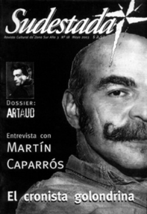

Buscar
Un vacío entre balas y urnas
Edición N° 18
Mayo 2003
Revista bimensual
Comprar edición impresaSumario
- Entrevista con Martín Caparrós: "Nos hicieron creer que política es eso que practican estos canallas"
- Artaud, la agonía del creador
- Un vacío entre balas y urnas
- Boxeo amateur en Luis Guillón: De la villa al ring
- V Festival Internacional de Cine Independiente: ¿Quién mira qué?
Compartir Articulo
Uno puede fácilmente caer en la tentación de preguntarse quién nos robó el vendaval de furia y vida que incendió el país hace un tiempo atrás. Quién se apropió de ese fuego incontrolable, de la gente en la calle, lista para cambiar las cosas. Quién apagó de un soplido la tímida lumbre que nos permitía arrimarnos desde muy lejos a cada asamblea vecinal. Quién fue, en definitiva, el responsable de aplastar con toneladas de propaganda aquella historia para imponernos hoy una nueva escena en la conocida farsa teatral que en nuestra democracia suele recibir el nombre de "elecciones". También sería bastante fácil afirmar que estas elecciones son una mentira bien posmoderna, con candidatos que parecen desprendidos del mismo partido patronal, con viejos y nuevos empleados del saqueo y la rapiña. Y mientras tanto, un vacío...
En medio de la farsa de los medios, un juez ordena a una multitud de policías desalojar una fábrica ocupada por sus trabajadoras, protagonistas de esta historia ante la desesperada opción de perder su fuente de subsistencia. Y por las calles corren almas y balas, banderas que se cruzan, repletas de siglas y siglas (cada vez más, por cierto), y afamados cronistas explicando desde cálidos sillones los purísimos principios de la propiedad privada, como eruditos en el tema. Y el vacío se hace enorme, intolerable...
¿Qué pasó? ¿Qué fue de aquello que no pudimos construir? ¿Dónde está la verdadera alternativa de poder de los trabajadores ocupados y desocupados, de los estudiantes, de los vecinos, de los jubilados? ¿Por qué esperamos tanto? Lejos, muy lejos, un ejército de asesinos arrasa con todo un pueblo en Irak y todo el mundo se pone de pie para condenar semejante atrocidad. No tan lejos, otros pueblos de América Latina se levantan y se enfrentan en las calles con la amenaza que tiene garras filosas, y es insaciable, y crece, y está cada vez más cerca nuestro.
Una multitud de especialistas en nada amontonan razones y respuestas para intentar resolver estos interrogantes. Pero la única respuesta posible, la única válida, no puede escucharse en otro lugar que no sea en la construcción. Otra vez el engaño, otra vez los imbéciles de turno persiguiendo con ambas manos un puestito en una dependencia estatal mientras, afuera, la realidad nos pasa por arriba.
No hay respuestas en estas líneas, se las dejamos a los sicarios del capitalismo que escuchamos todos los días en la radio o en la tele. Lo que hay es un vacío enorme, la dolorosa sensación de habernos defraudado a nosotros mismos. La angustia que genera lo que no pudo ser..., pero en un contrapunto feroz con aquello que esperamos construir. El tiempo se nos va de las manos, y el enemigo no se hace preguntas. Avanza.
Desnudemos las mentiras que nos imponen, apartemos del camino a los rapiñeros de siempre, y paguemos el precio en la búsqueda de algo diferente. Si no hay acuerdo en aquello de qué queremos, por lo menos comencemos sabiendo qué es aquello que no va más. Y tapemos este vacío que, otra vez y como siempre, nos ahoga las ideas y nos confunde los contornos de esta batalla.
Comentarios

Sudestada
El colectivo de Revista Sudestada esta integrado por Ignacio Portela, Hugo Montero, Walter Marini, Leandro Albani, Martín Latorraca, Pablo Fernández y Repo Bandini.
Articulos más vistos


LIBRERÍA SUDESTADA

Colección infantil

Distribuidora de Libros

Suscripción

Sudestada en URUGUAY

Otros articulos de esta edición
Entrevista con Martín Caparrós: "Nos hicieron creer que política es eso que practican estos canallas"
Viajero infatigable, cronista en lugares tan extraños como Sri Lanka o Birmania, Martín Caparrós es un escritor que no se ...
Boxeo amateur en Luis Guillón: De la villa al ring
Una noche de viernes de abril un nutrido staff de Sudestada aterrizó en la sociedad de fomento "Domingo Rodríguez" para ...
Artaud, la agonía del creador
Un recorrido imaginario por las últimas horas del polémico y genial poeta francés, integrante primero y crítico después del movimiento ...
V Festival Internacional de Cine Independiente: ¿Quién mira qué?
Estas notas fueron tomadas durante el transcurso del BAFICI (Buenos Aires Festival Internacional de Cine Independiente). Cada película trata el ...